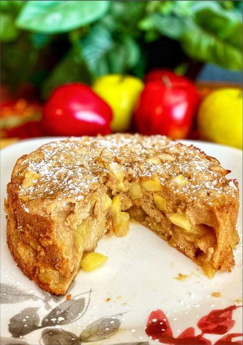

Charlotte

Description
Prep: 15 mins. Cook: 50 mins.
Additional: 15 mins. Total: 1 hr 20 mins.
Servings: 4. Yield: 1 apple Charlotte.
Ingredients
- 3 cups peeled and diced apples
- nonstick cooking spray
- 1 lime, juiced
- ¾ cup all-purpose flour
- ½ teaspoon ground cinnamon
- ½ teaspoon ground ginger
- ¼ teaspoon salt
- 2 large eggs
- ½ cup brown sugar
- ¼ cup white sugar
- 1 teaspoon vanilla extract
Steps
- Preheat the oven to 350 degrees F (175 degrees C). Spray a 6.5-inch
springform pan with nonstick cooking spray and line with parchment
paper. Spray parchment paper with nonstick cooking spray.
- Toss apples with lime juice and set aside. Mix flour, cinnamon,
ginger, and salt in a bowl and set aside.
- Combine eggs with brown sugar, white sugar, and vanilla
extract in a second bowl and beat with an electric mixer
until creamy. Add dry ingredients and mix until just combined.
Pour about 1/3 of the batter into the prepared pan.
Add apples and top with remaining batter.
- Bake in the preheated oven until a toothpick inserted in
center comes out clean, 50 to 60 minutes. Transfer to a
wire rack and cool for 15 minutes.
- Run a knife around the springform pan, release springform,
and flip apple Charlotte onto a plate. Immediately flip the cake
onto a serving platter.
Checkout other recipes
Return to main page